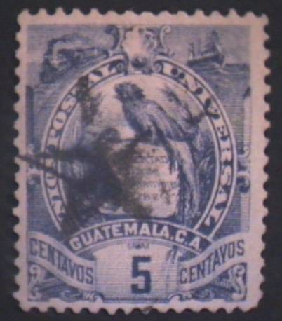

Return To Catalogue - Guatemala 1871-1878 - Guatemala 1879-1886 - Guatemala 1897-1920 - Guatemala miscellaneous
Note: on my website many of the
pictures can not be seen! They are of course present in the
catalogue;
contact me if you want to purchase the catalogue.
For issues of Guatemala before 1886, click here.
1 c blue 1 c green (1900) 2 c brown 2 c red (1900) 5 c violet 5 c blue (1900) 6 c lilac (1887) 6 c green (1900) 10 c red 10 c brown (1900) 20 c green 20 c violet (1900) 20 c brown (1902) 25 c orange 25 c yellow (1900) 25 c green (1902) 50 c green 75 c red 100 c brown 150 c blue 200 c yellow
The first stamps issued in 1886 are lithographed, the later ones are engraved. All the stamps have perforation 12.
Value of the stamps |
|||
vc = very common c = common * = not so common ** = uncommon |
*** = very uncommon R = rare RR = very rare RRR = extremely rare |
||
| Value | Unused | Used | Remarks |
| 1 c blue | * | c | Lithographed: *** |
| 1 c green | c | c | |
| 2 c brown | * | c | Lithographed: R |
| 2 c red | c | c | |
| 5 c violet | * | c | Two types: small or larger '5'. Lithographed: ** |
| 5 c blue | * | * | Only one type: large '5' |
| 6 c lilac | ** | c | |
| 6 c green | * | c | |
| 10 c red | * | * | Lithographed: ** |
| 10 c brown | * | * | |
| 20 c green | *** | ** | Lithographed: ** |
| 20 c violet | ** | ** | |
| 20 c brown | ** | ** | |
| 25 c orange | *** | ** | |
| 25 c yellow | ** | ** | Lithographed: *** |
| 25 c green | ** | ** | |
| 50 c | *** | *** | Only issued lithographed |
| 75 c | *** | *** | Only issued lithographed |
| 100 c | *** | *** | Only issued lithographed |
| 150 c | *** | *** | Only issued lithographed |
| 200 c | R | *** | Only issued lithographed |
Surcharged 1886:

'PROVISIONAL 1886. 1 UN CENTAVO' on 2 c brown
Value of the stamps |
|||
vc = very common c = common * = not so common ** = uncommon |
*** = very uncommon R = rare RR = very rare RRR = extremely rare |
||
| Value | Unused | Used | Remarks |
| 1 c on 2 c | * | * | Lithographed, exists with inverted overprint and other errors |
1894:


'1894 1 CENTAVO' on 2 c brown '1894 2 CENTAVOS' (blue) on 100 c brown '1894 6 CENTAVOS' (red) on 150 c blue '1894 10 CENTAVOS' on 75 c red '1894 10 CENTAVOS' (blue) on 200 c yellow
Value of the stamps |
|||
vc = very common c = common * = not so common ** = uncommon |
*** = very uncommon R = rare RR = very rare RRR = extremely rare |
||
| Value | Unused | Used | Remarks |
| 1 c on 2 c | * | * | |
| 2 c on 100 c | ** | ** | |
| 6 c on 150 c | ** | ** | |
| 10 c on 75 c | *** | *** | |
| 10 c on 200 c | *** | ** | |
1895:
'1895 1 CENTAVO' (red, 1895 in top) on 5 c violet '1 CENTAVO 1895' (red, 1895 at the bottom, 2 types) on 5 c violet
Value of the stamps |
|||
vc = very common c = common * = not so common ** = uncommon |
*** = very uncommon R = rare RR = very rare RRR = extremely rare |
||
| Value | Unused | Used | Remarks |
| '1895 1 CENTAVO' on 5 c | * | * | Inverted overprints exist: *** |
| '1 CENTAVO 1895' on 5 c | * | c | Two types of overprint, inverted overprints exist: R |
1898:


'1898 1 centavo' (red) on 5 c violet '1898 1 centavo' on 25 c orange '1898 1 centavo' (red) on 50 c green '1898 1 centavo' on 75 c red '1898 6 centavos' (red) on 5 c violet '1898 6 centavos' (overprint black) on 10 c red '1898 6 centavos' (overprint black) on 20 c green ' '1898 6 centavos' on 100 c brown '1898 6 centavos' (overprint red) on 150 c blue '1898 6 centavos' on 200 c yellow '1898 10 centavos' (overprint red) on 20 c green
Value of the stamps |
|||
vc = very common c = common * = not so common ** = uncommon |
*** = very uncommon R = rare RR = very rare RRR = extremely rare |
||
| Value | Unused | Used | Remarks |
| 1 c on 5 c | * | * | |
| 1 c on 25 c | * | * | |
| 1 c on 50 c | * | * | Exists with inverted overprint: R |
| 1 c on 75 c | * | * | |
| 6 c on 5 c | * | * | Exists with inverted overprint: *** |
| 6 c on 10 c | * | * | Exists with inverted overprint: *** |
| 6 c on 20 c | *** | *** | Exists with inverted overprint: *** |
| 6 c on 100 c | *** | *** | |
| 6 c on 150 c | *** | *** | |
| 6 c on 200 c | *** | *** | Exists with inverted overprint:R |
| 10 c on 20 c | *** | *** | |
1899: 'Un 1 Centavo 1899' (red) on 5 c violet
Value of the stamps |
|||
vc = very common c = common * = not so common ** = uncommon |
*** = very uncommon R = rare RR = very rare RRR = extremely rare |
||
| Value | Unused | Used | Remarks |
| 1 c on 5 c | * | * | Exists with inverted overprint: *** |
1900:
'1900 1 CENTAVO' on 10 c red
Value of the stamps |
|||
vc = very common c = common * = not so common ** = uncommon |
*** = very uncommon R = rare RR = very rare RRR = extremely rare |
||
| Value | Unused | Used | Remarks |
| 1 c on 10 c | c | c | Exists with inverted overprint: *** |
1901:


'UN 1 CENTAVO 1901'on 25 c orange '1901 1 CENTAVO' on 20 c green '1902 2 CENTAVOS' on 20 c green
Value of the stamps |
|||
vc = very common c = common * = not so common ** = uncommon |
*** = very uncommon R = rare RR = very rare RRR = extremely rare |
||
| Value | Unused | Used | Remarks |
| 1 c on 25 c | * | * | |
| 1 c on 20 c | * | * | Exists with inverted overprint: *** |
| 2 c on 20 c | ** | ** | |
1903:
'1903 25 CENTAVOS' on 1 c green '1903 25 CENTAVOS' on 2 c red '1903 25 CENTAVOS' on 6 c green '1903 25 CENTAVOS' on 10 c brown '1903 25 CENTAVOS' on 75 c red '1903 25 CENTAVOS' (overprint red) on 150 c blue '1903 25 CENTAVOS' on 200 c yellow
Value of the stamps |
|||
vc = very common c = common * = not so common ** = uncommon |
*** = very uncommon R = rare RR = very rare RRR = extremely rare |
||
| Value | Unused | Used | Remarks |
| 25 c on 1 c | * | * | Exists with inverted overprint: R |
| 25 c on 2 c | * | * | |
| 25 c on 6 c | * | * | Exists with inverted overprint: R |
| 25 c on 10 c | ** | ** | |
| 25 c on 75 c | *** | *** | |
| 25 c on 150 c | R | *** | |
| 25 c on 200 c | *** | *** | |
Bogus (!) provisional overprints of 1898
'1898 6 centavos' (overprint red or black) on 2 c brown '1898 6 centavos' (overprint red) on 10 c red '1898 6 centavos' (overprint red) on 20 c green '1898 10 centavos' (overprint black) on 20 c green
I've been told that the next overprint is forged, I have no further information:

Some mute cancels on this issue:
A 'GUATEMALA' in a circle cancel as used by the UPU. I've seen
several other values with this special cancel.

(Reduced size)
(Special cancellation or fiscal cancellation?)
1 c red 5 c lilac 10 c yellow
These stamps are actually fiscal stamps.


{kind=link}
{kind=link}